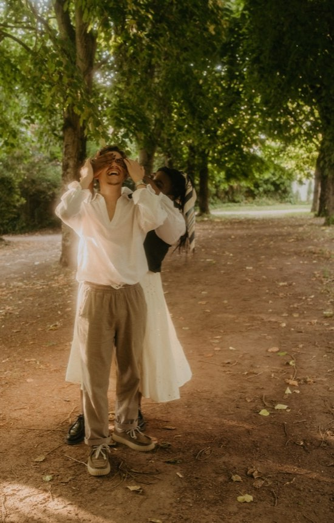
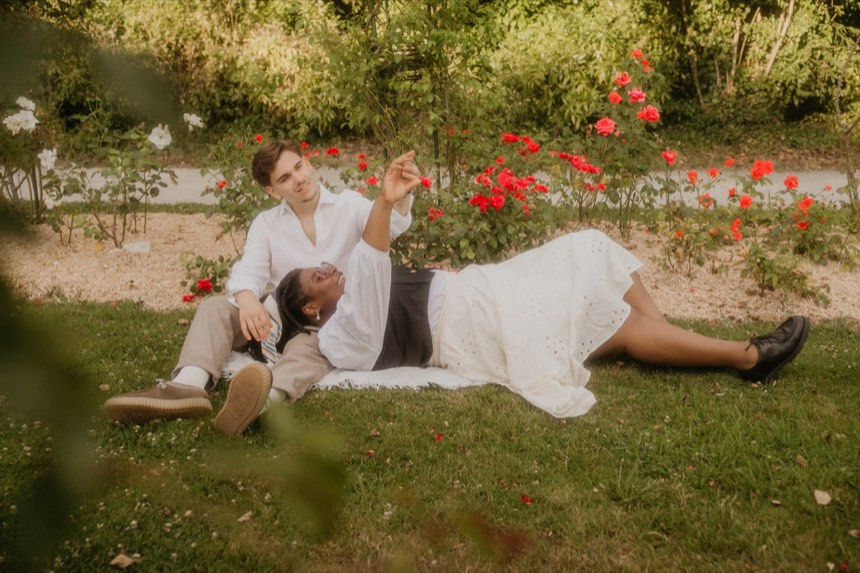
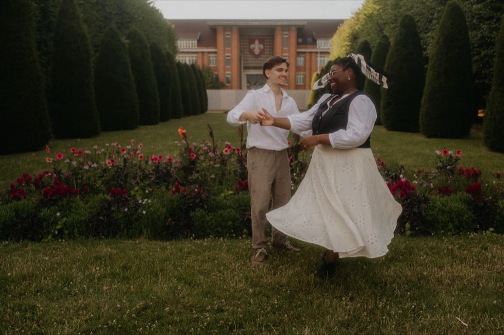
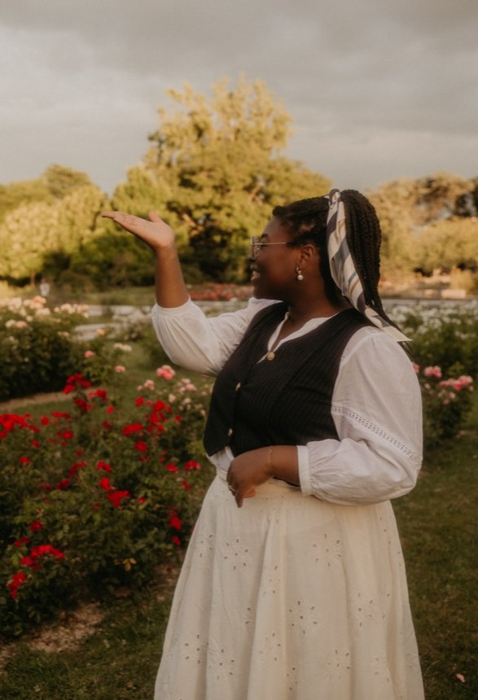
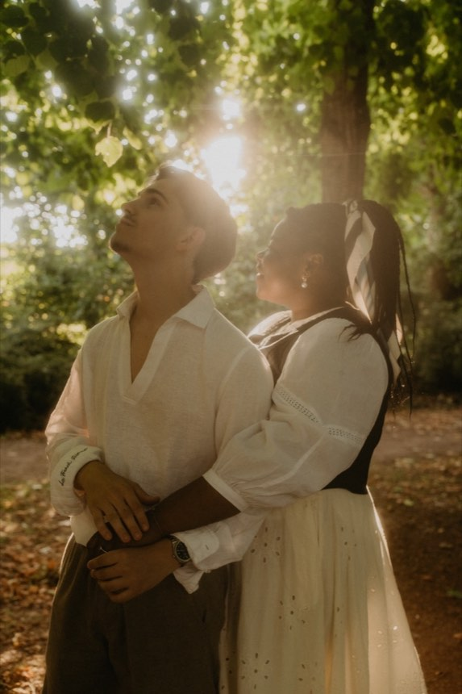

Samedi 12 décembre 2026
Thomy&Florian
Vous invitent à partager un bout de bonheur en l'honneur du jour où ils se disent oui
Domaine les Hauts de Vertigneul
Romeries
Samedi 12 décembre 2026
Vous invitent à partager un bout de bonheur en l'honneur du jour où ils se disent oui
Domaine les Hauts de Vertigneul
Romeries
Faites défiler : ils viennent à vous.





Il nous reste à écrire le plus beau,
avec vous.
Samedi 12 décembre 2026 — les horaires, les adresses, et un bouton pour s'y rendre.
Chez Florian — 156 rue de la Clouterie, 59125 Trith-Saint-Léger
ItinéraireMairie de Trith-Saint-Léger — place de la Résistance, 59125 Trith-Saint-Léger
ItinéraireDans la salle de L'Étable — Domaine les Hauts de Vertigneul, 5 hameau de Vertigneul, 59730 Romeries
ItinéraireOn trinque ensemble, juste après la cérémonie.
La grande salle du domaine, pour la suite des festivités — jusqu'au bout de la nuit.
Prévoyez une petite polaire. On sera peu à l'extérieur, mais c'est décembre : de quoi se couvrir entre deux salles fera du bien.